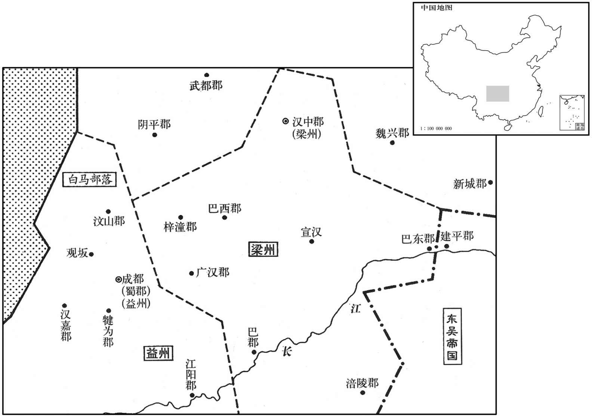
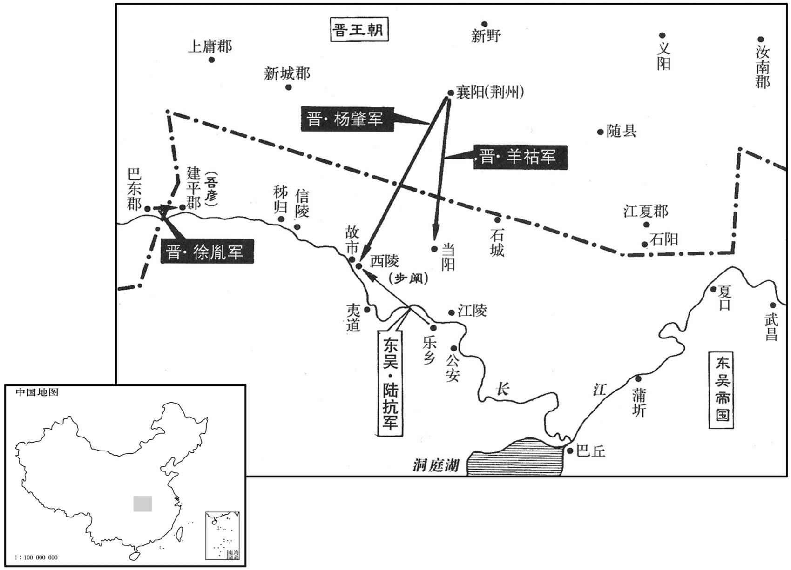

公元272年资治通鉴：本年记事、原文与白话对照
按原书编年位置阅读；追叙和史论不等于本年发生的事件。白话采用所据译本，缺译不以生成译文补齐。
卷79 · 本年记事
公元272年 · 晋世祖武皇帝泰始八年
八年〔（任辰、二七二）〕
上传原文的注释括号有异常，字符原样保留；无法可靠划分的段落默认全文显示。
本年事件索引（现代整理）
- 监军何桢诱降刘猛部将李恪，刘猛被杀、部众归降
- 贾充之女嫁给太子司马衷，年长太子两岁且多妒忌
- 司马孚去世，遗命薄葬并自称魏朝贞士
- 晋武帝宽容直谏，免去越职弹劾皇甫陶的郑徽官职
- 皇甫晏不听劝阻讨伐胡人，被部将张弘杀害
- 王濬获羊祜举荐镇守益州，准备训练水军
- 王濬不待朝廷批准即征兵造船，建造大型战舰
- 吾彦用铁锁横断江路，防备晋军顺流而下
- 张赉收押王濬部属，晋武帝反而称赞其守边果断
- 晋国大赦
- 贾充任司空，与任恺结党相争并排挤任恺
- 步阐据西陵降晋，晋廷授予高官厚爵
- 十月晦日食
- 令狐丰废黜梁澄自立为敦煌太守，击败杨欣所遣部队
- 陆抗迅速围困西陵、抵挡羊祜等晋军援兵
- 陆抗命张咸拆毁江陵堰坝，阻止羊祜利用水道运粮
- 陆抗击败杨肇、收复西陵，赦免数万归附者
- 孙皓相信术士预言吴将攻取洛阳，愈发不修德政
- 庾纯当面以高贵乡公之死斥责贾充，最终获准复职
- 孙皓毒杀万彧，留平中毒后亦忧愤而死
- 楼玄任宫廷要职，公正守法使孙皓渐生不悦
- 贺邵上疏揭露谄媚当道、赋役繁重，孙皓深恨之
- 楼玄、贺邵遭诬陷流放，楼玄最终被杀，何定也因罪伏诛
- 羊祜以诚信待吴，与陆抗互通使节、互赠药酒
- 陆抗劝孙皓休养民力、选贤任能，反对无益攻伐
- 羊祜预言王衍将以清谈误国，荀勖、冯紞等人排斥羊祜

本年形势与背景参考图

本年形势与背景参考图
春，正月，监军何桢讨刘猛，屡破之，潜以利诱其左部帅李恪，〔左部，五部之一也。帅，所类翻。〕恪杀猛以降。〔降，户江翻。〕
春季，正月，晋监军何桢讨伐刘猛。多次打败刘猛，何桢暗中以利益引诱刘猛的左部帅李恪，李恪杀了刘猛投降了晋。
二月，辛卯，皇太子纳贾妃。妃年十五，长于太子二岁，〔长，知两翻。〕勡忌多权诈，太子嬖而畏之。〔嬖，卑义翻，又博计翻。〕
二月，辛卯（十七日），晋皇太子纳贾妃。贾妃年龄十五，比太子大两岁。她生性妒忌，机巧狡诈，太子宠爱她又怕她。
壬辰，安平献王孚卒，年九十三。孚性忠慎，宣帝执政，孚常自退损。后逢废立之际，未尝预谋；景、文二帝以孚属尊，亦不敢逼。〔孚于废立之际示，柔而能正。事见七十六卷正元年、七十七卷景元元年。〕及帝即位，恩礼尤重。元会，诏孚乘舆上殿，帝于阼阶迎拜。〔阼阶，东阶，主阶也。上，时掌翻；下同。既坐，亲奉觞上寿，如家人礼。帝每拜，孚跪而止之。孚虽见尊宠，不以为荣，常有忧色。临终，遣令曰：「有魏贞士河内司马孚字叔达，不伊不周，不夷不惠，立身行道，终始若一。当衣以时服，敛以素棺。」〔衣，于既翻。敛，力赡翻。〕诏赐东园温明秘器，〔服虔曰：东园园温明，形如方漆桶，开一面，漆画之，以樈置其中，以悬尸上，大敛并盖之。师古曰：东园，署名也，属少府，其署主作此器。秘器，梓棺，以凶器，故秘之。〕诸所施行，皆依汉东平献王故事；〔见四十六卷汉章帝建初八人。〕其家遵孚遗旨，所给器物，一不施用。
两版字句有差异，建议核对原文。
壬辰（十八日），安平献王司马孚去世，享年九十三岁。司马孚禀性忠诚谨慎，宣帝执政时，司马孚时常自我退让、谦抑。以后每逢帝王废立之际，司马孚都不曾参与谋划。景、文二帝因司马孚属于长辈，也不敢强迫他。到晋武帝即位，对司马孚礼遇格外格厚重、尊贵。元旦朝见群臣，晋武武帝让司马孚乘轿子上殿，晋武帝在阶迎接拜见。司马孚坐下后，晋武帝亲捧上酒杯，为司马孚祝寿，就像普通家中的礼节。晋武帝每次向司马孚行拜礼，司马孚就跪下制止他。司马孚虽然被尊重恩宠，却并不以此为荣耀，常常面有忧虑之色。临终，留下遗言说：“魏朝的忠贞不移的人士、河内人司马孚，字叔达，不像伊尹，不像周公，不像伯夷，不像柳下惠，但是立身行道，始终如一。应当穿上平时的衣服，用朴素的棺材装殓。”晋武帝下令，赐予司马孚专供王公贵族所用的棺木东园温明秘器。各项事宜的施行，全都按照汉代东平献王的先例。司马孚的家属仍遵照司马孚的遗意，凡是朝廷所供给的器具物品，一概不使用。
帝与右将军皇甫陶论事，〔泰始五年，罢镇军将军，复置左右将军。姓谱：左传宋有皇父充石，公族也。汉初有皇父鸶，自鲁徙居茂陵，改「父」为「甫」。〕陶与帝争言，散骑常侍郑徽表请罪之。帝曰：「忠谠之，〔言谠，多曩翻，善言也。〕唯患不闻徽越职妄奏，岂朕之意。」遂免徽官。
晋武帝和右将军皇甫陶在一起论事，皇甫陶与晋武帝争论起来。散骑常侍郑徽上表，请求给皇甫陶判罪。晋武帝说：“忠城正直的言论，唯恐听不到，郑徽逾越职位，胡乱禀奏，这岂是朕的意思？”于是免去郑徽的官职。
夏，汶山白马胡侵掠诸种，〔汉武帝诛冉駹，开汶山郡，宣帝地节三年，合于蜀郡；蜀汉刘氏又立汶山郡。白马胡即白马夷也。汶，读与僧同。种，章勇翻。〕益州刺史皇甫晏欲讨之。〔益州，统蜀犍为、汶山、汉嘉、江阳、朱提、越巂、獱柯。晋志曰：益之为言阨，言所在之地险阨也；亦曰，疆壤益大，故以名焉。〕典学从事蜀郡何旅等〔典学从事，典学校及部诸郡文学掾。汉诸州刺史有孝经师，主监试经；月令师，主时节祭祀；魏、晋合其职为典学从事。〕谏曰：「胡夷相残，固其常性，未为大患。今盛夏出军，水潦将降，必有疾疫，宜须秋、冬图之。」晏一听。胡康木子烧番言军出必败；〔木康木子烧香，胡人之名。〕晏以为沮众，斩之。军至观阪，〔水经注：观阪，在都安县。晋书地理志：都安县属汶山郡。沈约曰：都安县，蜀立。宋白曰：永康军导江县蜀都安县地。沮，在吕翻。〕牙门张弘等以汶山道险，且畏胡众，因夜作乱，杀晏，军中惊扰，兵曹从事犍为杨仓勒兵力战而死。〔自汉以来，诸州有军事，则置兵曹从事。犍，居言翻。〕弘遂诬晏，云「率己共反」，故杀之，传道京师。晏主簿蜀郡何攀，〔州主簿，录合下事，省文书；郡主簿，所职略同。〕方居母丧，闻之，诣洛证晏不反。夕等纵兵抄掠。〔抄，楚交翻。〕广汉主簿李毅言于太守弘农王浚曰：「皇甫侯起自诸生，何求而反！且广汉与成都密迩，而统梁州者，朝廷欲以制益州之衿领，〔汉广汉郡治雒；泰始二年，分新都郡治雒，而广汉县，与成都相近。衿，衣系。领，衣要襘着项颔处也。〕正防今日之变也。今益州有乱，乃此郡之忧也。张弘小竖，众所不与，宜实时赴讨，不可失也。」浚欲先上请，〔上，时掌翻；下先上同。〕毅曰：「杀主之贼，为恶大，当不拘常制，何请之有！」浚乃发兵讨弘。诏以浚为益州刺史。浚击弘，斩之，夷三族。〔考异曰：华阳国志，弘杀晏在十年五月。武帝纪在今年六月。按王浚请伐吴表云：「臣作船七年，日有朽败。」浚再为益州刺史，方受诏作船。咸宁五年，下诏伐吴，借使浚以其年上表，则再为益州亦在泰始九年之前矣。今从晋纪为定。〕封浚关内侯。
夏季，汶山白马胡欺凌、掠夺各民族，益州刺史皇甫晏要去征讨。典学从事、蜀郡人何旅等认谏阻说：“胡夷互相残杀，本来是他们平时的本性，并没有造成大的祸患。现在是盛夏时节，如果出兵，将遇到雨季，必然要发生疾病、瘟疫，应当等到秋、冬季节再谋划这件事。”皇甫晏不听。胡人名叫康木子烧香的人说，军队出去必打败仗。皇甫晏认为他给众人泄气，扰乱军心，就杀了他。军队行进到观孤时，牙门张弘等人因为汶山道路险要难行，又害怕胡人，就趁夜里叛乱，杀死皇甫晏。军中惊慌混乱，兵曹从事、犍为人杨仓统率军队拼力战斗而死。张弘于是诬陷皇甫晏，说：“皇甫晏领着我们共同谋反。”因而杀皇甫晏，首级传送到京成。皇甫晏的主簿蜀郡人何攀，因母亲去世正在守丧，听到这个消息，便到洛阳去证明皇甫晏没有造反。张弘等人放纵兵士抢劫掠夺财物。广汉主簿李毅对太守、弘农人王浚说：“皇甫侯是读书人出身，他有什么可图的而要造反？况且广汉与成都贴近，但却统属于梁州，这其中缘由就是朝廷要以梁州来制约益州的咽喉要害，正为了防范今日的突发事故。如今益州发生动乱，便是本郡的忧患。张弘小子，众人都不屑与其为伍，应当立刻去讨伐，不要失去机会。”王浚还要先向上请示，李毅说：“杀了主人的贼子，罪恶尤其大，应当不受常规限制，还有什么可请示的？”于是王浚便发兵讨伐张弘。晋武帝下诏，任命王浚为益州刺史。王浚攻打张弘，将他杀死，并灭三族。晋朝封王浚为关内侯。
初，浚为羊祜参军，〔晋制，诸位从公为持节都督，参军六人。〕祜深知之。祜兄子暨白：「浚为人志大奢侈，不可专任，宜有以裁之。」祜曰：「浚有大才，将以济其所欲，必可用也。」更转为车骑从事中郎。〔祜为车骑将军，其属有从事中郎，秩比千石。〕浚在益州，明立威信，蛮夷多归附之；俄迁大司农。时帝与羊祜阴谋伐吴，祜以为伐吴宜藉上流之势，密表留浚复为益州刺史，使治水军。〔治，直之翻。〕寻加龙骧将军，监益、梁诸军事。〔龙骧将军之号始此。骧，思将翻。监，工衔翻。晋制，方面之任，资重者为都督诸军事，资望轻者为监军事。考异曰：羊祜传曰：「表留浚监益州诸军事，君龙骧将军。」按浚传，「祜密表留浚，重拜益州则史。」又曰，「寻以谣言拜龙骧将军，监梁、益诸军事。」然则作刺史与监军，自是二事也。华阳国志又云：「咸宁四年，浚迁大司农，五年，拜龙骧，监梁、益二州。」按时羊祜已卒，尤不可据。〕
当年，王浚曾是羊祜的参军，羊祜深知王浚为人。羊祜的侄子羊暨对羊祜说：“王浚为人志向大，好奢侈，不可让他专权，应当有控制他的办法。”羊祜说：“王浚很有才能，足以达到目的，完全可以用他。”王浚又升迁为车骑从事中郎。王浚在益州，明显地树立自己的威望和信用，蛮夷大都投奔依附他；不久，王浚又升迁为大司农。当时，晋武帝与羊祜秘密谋划讨伐吴国，羊祜认为功打吴国，应当凭借上游地势，就秘密上书晋武帝，请求留下王浚还让他担任益州刺史，派他去治理水军。不久又授予王浚龙骧将军职，掌管益州、梁州各项军事。
诏浚罢屯田军，大作舟舰。〔舰，户黯翻。〕别驾何攀以为「屯田兵不过五六百人，作船不能猝办，后者未成，前者已腐。宜召诸郡兵合万余造之，岁终可成。」浚欲先上须报，〔上，时掌翻。〕攀曰：「朝廷猝闻召万兵，必不听；不如辄召，〔辄，专也。设当见却，功夫已成，势不得止。」浚从之，令攀典造舟舰器仗。于是作大舰，长百二十步，〔长，宜亮翻。〕受二千余人，以木为城，起楼橹，开四出门，其上皆得驰马往来。〔考异曰：华阳国志云：「咸宁二年三月，浚受诏作船。」按浚表云「作船七年」，则国志不可据也。〕
两版字句有差异，建议核对原文。
晋武帝命令王浚解散屯田军，大量建造战船。别驾何攀认为，屯田只不过有五六百人，不能很快地把船造出来，后面的船还没有造成，前面造好的船也已经朽烂了。应当召集各郡士兵，凑足一万多人造船，年终就能完成任务。王浚想先向上报告请示，何攀说：“朝廷突然听到要召集一万名兵士的消息，肯定不会同意。不如先自做主张马上去办，假如被拒绝，工程人力已定局，其趋势已不能阻止了。”王浚听从了何攀的话，命令何攀掌管制造战船及所需用具、兵器。于是制做大战船，船身长度为一百二十步，能容纳二千余人，用木头造成楼，筑起望敌军的高台，四面开出可以进出的门，船上可以骑着马往来奔跑。
时作船木窃，蔽江而下，窃，芳废翻。说文曰：削木札朴也。字本作「柿」，详见辨误。〕吴建平太守吴郡吾彦〔建平郡，汉南郡之巫县，吴主权分置宜都郡，吴主休永安三年，分宜都主建平郡，领信陵、兴山、窃归、沙渠四县。杜佑曰：建平今巴郡，吴置建平郡于窃归。姓谱：吾，本己姓，夏昆吾氏之后。〕取流窃以白吴主曰：「晋必有攻吴之计，宜增建平兵以塞其冲要。」〔塞，悉则翻。〕吴主不从。彦乃为铁锁横断江路。〔断，丁管翻。为后王浚烧断铁镇张本。〕
两版字句有差异，建议核对原文。
当时造般砍削下的木片，遮盖了江面，顺江水而下，吴国建平太守、吴郡人吾彦，拿着顺江流而下的木片禀报吴主说：“晋国必然有攻吴的计划，应当增加建平的兵力，以堵住要害地区。”吴主不听，吾彦就用铁锁横拦江面，阻断江上通路。
王浚虽受中制募兵，而无虎符；广汉太守敦煌张赉收浚从事列上。〔敦，徒门翻。赉，胡教翻。上，时掌翻。〕帝召赉还，责曰：「何不密启而便收从事﹖」赉曰：「蜀、汉绝远，刘备尝用之矣。辄收，臣犹以为轻。」帝善之。
王浚虽然接受了朝廷的命令招募兵员，但是他却没有虎符。广汉太守、郭煌人张学就拘捕了王浚的从事而上报。晋武帝召回张学，责备他说：“你为什么不秘密禀告却直接就收捕了他的从事？”张学回答说：“蜀汉之地极其僻远，当年刘备就曾以此地割据。立时收捕了他的，我还觉得这是轻的呢！”晋武帝称赞了他。
壬辰，大赦。
壬辰（十八日），晋朝大赦天下。
秋，七月，以贾充为司空，侍中、尚书令、领兵如故。〔充自文帝时统城外诸军。〕充与侍中任恺皆为帝所宠任，充欲专名势而忌恺，于是朝士各有所附，〔朝，直遥翻。〕朋党纷然。帝知之召充恺宴于式干殿而谓之曰：「朝廷宜壹，大臣当和。」充、恺等各拜谢。既而充恺以帝已知而不责，愈无所惮，外相崇重，内怨益深。充乃荐恺为吏部尚书，恺侍觐转希；〔既不为侍中，则侍觐希矣。〕充因与荀勖、冯紞承间共谮之，〔间，古苋翻。〕恺由是得罪，废于家。
秋季，七月，晋朝任命贾充为司空，其侍中、尚书令、领兵等职务依旧。贾充与侍中任恺都被晋武帝所宠爱、信任，贾想独占名淮、权势而嫉妒任恺，于是朝中官吏各自都有依附的靠山，各种宗派集团众多而庞杂。晋武帝知道了这些情况，召来贾充、任恺，在式乾殿宴请他们，说：“朝廷应当是一个统一的整体，大臣之间要和睦相处。”贾充、任恺各自拜谢了晋武帝。以后贾充、任恺认为晋武帝已经知道了他们之间不和却又没有责备他们，更加无所顾忌，表面上他们互相推崇、尊重，内心里的怨恨却越来越深。贾充于是荐举任恺任吏部尚书，任恺侍从会见皇帝的机会变少了，贾充便与荀勖、冯一起乘机诬陷任恺，任恺因此获罪，被罢免呆在家里。
八月，吴主征昭武将军、西陵督步阐。阐世在西陵〔□吴王权□步骘督西陵，骘卒，子协继之。阐，协弟也。〕猝被征，自以失职，且欋有谗，九月，据城来降，遣兄子玑、璇诣洛阳为任。〔玑、璇皆协子。降，户江翻。璇，如缘翻。〕诏以阐为都督西陵诸军事，卫将军、开府仪同三司、侍中，领交州牧，封宜都公。
八月，吴主征召昭武将军、西陵督步阐。步阐世代居住在西陵，突然被召，自以为是因公事失职，而且害怕有人进了谗言，九月，占据西陵城投降晋国，派侄子步、步到洛阳去当人质。晋朝诏令任命步阐为都督西陵诸事、卫将军、开府仪同三司、侍中，兼任交州牧，封步阐为宜都公。
冬，十月，宰未朔，日有食之。
冬季，十月，辛未朔（初一），出现日食。
敦煌太守尹璩卒。〔敦，徒门翻。璩，求于翻。〕凉州刺史杨欣表敦煌令梁澄领太守。功曹宋质辄废澄，表议郎令狐丰为太守。〔考异曰：晋春秋「璩」作「据」，今从武纪。武纪云：「令狐丰废澄，自领郡事。」今从晋春秋。〕杨欣遣兵击之，为质所败。〔败，补迈翻。〕
晋朝敦煌太守尹璩去世。凉州刺只杨欣上表，请示让敦煌令澄兼任太守。功曹宋质擅自废黜了梁澄，上表请让议郎令狐丰任敦煌太守。杨欣派兵攻打宋质，结果被宋质打败。
吴陆抗闻步阐叛，亟遣将军左奕、吾彦等讨之。帝遣荆州刺史杨肇迎阐于西陵，车骑将军羊祜帅步军出江陵，巴东监军徐胤帅水军击建平以救阐。〔帅，读曰率。〕陆抗槉西陵诸军筑严围，自赤溪至于故市，〔水经注：江水出西陵峡，东南流，径故城洲。洲北附岸洲头曰郭洲，长二里，广一里，上有步阐故城，方圆称洲，周回略汉，故城洲上城周里，阐父骘所筑也。又东径陵抗故城。今峡州远安县在江北，有孤山，有陆抗故城，有舟山，时有赤气，意赤溪当出于舟山，故市即步骘故城，所居成市，而阐别筑城，故曰故市。〕内以围阐，外以御晋兵，昼夜催切，〔切，迫也。〕如敌已至，众甚苦之。诸将谏曰：「今宜及三军之锐，急攻阐，比晋救至，必可拔也，〔比，必寐翻。〕何事于围以敝士民之力！」抗曰：「此城处劫既固，〔处，昌吕翻。〕粮榖又足，且凡备御之具，皆抗所宿规，〔抗先尝督西陵。〕今反攻之，不可猝拔。北兵至而无备，表里受难，〔难，乃旦翻。〕何以御之！」诸将皆欲攻阐，抗欲服众心，听令一攻，果无利。围备始合，而羊祜兵五万至江陵。诸将咸以抗不宜上，〔自乐乡而西赴西陵为上。上，时掌翻。〕抗曰：「江陵城固兵足，无可忧者。假令敌得江陵，必不能守，所损者小。若晋据西陵，则南山群夷皆当扰动，其患不可量也！」乃自帅众赴西陵。〔南山，谓江南诸山，群夷所依阻。量，音良。帅，读曰率。〕
吴陆抗听到步阐背叛的消息，马上派将军左奕、吾彦等去讨伐。晋武帝派荆州刺史杨肇到西陵迎接步阐，车骑将军羊祜统率步兵进攻江陵，巴东军徐胤率水军攻打建平救援步阐。陆抗命令西陵各军筑造高峻的围墙，从赤溪一直到故市，内可用来围困步阐，外可以此抵御晋兵。阱抗白天黑夜地催逼筑围，就好像敌人已经来到眼前，众人为此异常劳苦。诸位将官进谏说：“当前应乘三军的锐气，急速攻打步阐，等晋的救兵到来，必定已克西陵，何必去做筑围事，使士兵、百姓的气力都疲惫了。”陆抗说：“西陵城所处的地势已是很稳固了，粮谷又充足，况具所有守备防御的设施、器具，都是我早先西陵任职时所设置准备的，现在反过来攻打它，不可能很快取胜。晋兵到来而我们没有防备，内外受敌，靠什么来抵御？”诸将都想攻打步阐，陆抗想使众人心服，就听任他们去试一试，果然没有得到好处，于是开始齐心协力筑围防守。这时，羊祜的五万兵到了江陵。诸位将官都认为陆抗不适宜去西陵，陆抗说：“江陵城坚固，兵员足，没有什么可担忧的。假如敌人得到了江陵，必然守不住，我们的损失小。如果晋兵占据了西陵，那么南山的众多夷人都会骚乱动摇，这样的话，祸患就不可估量了！”于是，亲自率领部众奔赴西陵。
初，抗以江陵之北，道路平易，〔易，以豉翻。〕槉江陵督张咸作大堰遏水，渐渍平土以绝寇叛。〔堰，于扇翻。今江陵有三海八柜，引诸湖及沮、漳之水注之，弥漫数百里，即作堰之故智也。渐，将廉翻。〕羊祜欲因所遏水以船运粮，扬声将破堰以通步军。抗闻之，使咸亟破之。诸将皆惑，屡谏不听。祜至当阳，闻堰败，乃改船以车运粮，大费功力。
当初，陆抗因江陵以北道路平坦开阔，命令江陵督张咸兴造大坝阻断水流，浸润平地以断绝敌人侵犯和内部叛乱。羊祜想借大坝阻住的水用船运送粮草，就故意扬言要破坝以通过步兵。陆抗听到这个消息，让张咸急速毁坏大坝，诸将都迷感不解，多次谏阻陆抗也不听。结果羊祜到了当阳，听说大坝已毁，只好改用车子运粮，耗费子许多人力和时间。
十一月，杨肇至西陵。陆抗令公安督孙遵循南岸拒羊祜，〔防托南岸，使祜军不得渡而已。〕水军督留虑拒徐胤，〔恐胤顺流东下，故以水军拒之。〕抗自将大军凭围对肇。〔凭长围以对之，则彼为客，我为主。〕将军朱乔营都督俞赞亡诣肇。〔姓谱：俞，古善医俞跗之后。〕抗曰：「赞军中旧吏，知吾虚实。吾常虑夷兵素不简练，若敌攻围，必先此处。」〔先，悉荐翻。〕即夜易夷兵，皆以精兵守之。明日，肇果攻故夷兵处，抗命击之，矢石雨下，肇众死〔【章：甲十一行本「死」上有「伤」字；乙十一行本同；孔本同。】〕者相属。〔属，之欲翻。〕十二月，肇计屈，夜遁。抗欲追之，而虑步阐畜力伺间，〔间，古苋翻。〕兵不足分，于是但鸣鼓戒众，若将追者。肇众凶惧，悉解甲挺走，〔凶，许拱翻，恐惧声。挺，待鼎翻，拔也。挺走，拔身而走也。〕抗使轻兵蹑之，肇兵大败，〔蹑，尼辄翻。〕祜等皆引军还。抗遂拔西陵，诛阐及同谋将吏数十人，皆夷三族，自余所请赦者数万口。〔元非同谋而胁从者，请而赦之。〕东还乐乡，貌无矜色，谦冲如常。吴主加抗都护。〔吴官有左右都护，今加都护，尽护诸将也。〕羊祜坐贬平南将军，〔征、镇、安、平，四平最下。车骑位次骠骑，自此而下，六等至四征。祜自车骑贬平南，凡降十四号〕杨肇免为庶人。
十一月，晋朝杨肇到达西陵。陆抗命令公安督孙遵沿着南岸抵御羊祜，水军督留虑抵御徐胤，陆抗亲自率领大军凭藉长围与杨肇对峙。将军朱乔营中的都督俞赞逃到了杨肇那里。陆抗说：“俞赞是军队中的旧官吏，了解我军虚实。我常常担心夷兵平时的训练不够，敌人如果围攻，必定先打夷兵防守的地方。”于是当夜更换夷兵，全都用精兵把守。第二天，杨肇果然攻打原来夷兵防守的地方，陆抗下令反击，箭与石块像下雨一样袭来，杨肇的部众死伤不断。十二月，杨肇无计可施，夜里逃走了。陆抗想追杨肇，又担心步阐一直积蓄力量，窥伺时机，自己的兵力不足以分开对付两头，就只擂鼓警戒部众，作出要追赶的样子来。杨肇的部众恐惧骚动，全都丢弃铠甲脱身而逃。陆抗派轻兵紧随在后，杨肇兵大败，羊祜等人都领兵而还。陆抗于是攻克西陵，杀死步阐以及与他同谋的将吏共几十人，全都夷灭三族，请求对余下几万人赦免。陆抗返回东边的乐乡，脸上没有骄傲、自负之色，还像以往一样谦虚。吴主加封陆抗为都护。晋朝羊祜获罪，被贬为平南将军。杨肇被免去官职成为平民。
吴主既克西陵，自谓得天助，志益张大，使术士尚广筮取天下，〔姓谱：尚姓，师尚父之后，后汉有高士尚子平。〕对曰：「吉。庚子岁，青盖当入洛阳。」〔其后吴亡，皓入洛，岁在庚子。〕吴主喜，不修德政，专为兼并之计。
吴主攻克西陵后，自认为是得到了上天的佑助，志向益发显扬。他让术士尚广为他占卜是否能得到天下，尚广回答说：“吉。庚子年，青色的车盖会进入洛阳。”吴主大喜，不整治政令，一心一意地谋划兼并天下的事情。
贾充与朝士宴饮，〔朝，直遥翻。考异曰：三十国春秋在十一月，晋春秋在十月己巳，恐皆非实，故附于冬末。〕河南尹庾纯醉，与充争言。充曰：「父老，不归供养，〔供，居用翻。养，羊尚翻。〕卿为无天地！」纯曰：「高贵乡公何在﹖」斥其弒君也。〕充凓怒，上表解职；纯亦上表自劾。诏免纯官，仍下五府正其臧否。〔当时除贾充之外，居公位者有五，故下五府。下，遐稼翻。否，音鄙。〕石苞以为纯荣官忘亲，当除名；齐王攸等以为纯于礼律未有违；诏从攸议，复以纯为国子祭酒。〔帝初立国子学，定置国子祭酒、博士各一人，助教十五人，以教生徒。〕
贾充与晋朝廷官员在一起宴饮，河南尹庾纯喝醉了酒，与贾充争论起来。贾充说：“你的父亲年老，不回家去奉养，你是无天无地之人！”庾纯反问：“你的先主高贵乡公在何处？”贾充又羞又怒，上表请求辞官；庾纯也上表弹劾自己。晋武帝下诏，免去庾纯官职，按制度让五公府评定他的善恶、得失。石苞认为，庾纯以做官为荣耀而忘记了父母，应当除去其名籍；齐王司马攸等人认为，庾纯并没有违反礼仪、律令。晋武帝听从了司马攸的建议，又任命庚纯为国子祭酒。
吴主之游华里也，〔事见上七年。〕右丞相万彧与右大司马丁奉、左将军留平密谋曰：「若至华里不归，社稷事重，不得不自还。」吴主颇闻之，以彧等旧臣，隐忍不发。是岁，吴主因会以毒饮彧，传酒人私减之。又饮留平，〔饮，于鸩翻。〕平觉之，服他药以解，得不死。彧自杀；〔考异曰：吴志孙暼传云：彧被谴忧死，今从江表传。〕平忧懑，月余亦死。〔懑，音闷，又音汉。徙彧子弟于庐陵。
去年吴主去华里游玩时，右丞相万与右大司马丁奉、左将军留平密谋说：“如果皇上到华里不回来，国家的事情重大，我们就不得不自己返回了。”吴主听到了他们的话，因为万等人是旧臣，就克制忍耐着没有发做。这一年，吴主借着会见的机会，拿毒酒给万喝，递送酒杯的人暗中把毒酒减少了。吴主又拿着毒酒给留平喝，留平察觉，服别的药解了毒，得以不死。万自杀而死，留平忧愤郁闷，一个多月以后也死了。吴主把万的子侄都放逐到庐陵。
初，彧请选忠清之士以补近职，吴主以大司农楼玄为宫下镇，主殿中事。〔吴旧事，禁中主者自用亲近人。暼以彧言，用玄主殿中事。〕玄正身帅众，〔帅，读曰率。〕奉法而行应对切直，吴主浸不悦。
当初，万请求挑选忠诚、清正的人来补充君主左右的职位，吴主任命大司农楼玄为宫下镇，主管宫中事务。楼玄修身率众，遵奉法度行事，对答恳切耿直，吴主渐渐地心中不快。
中书令领太子太傅贺卲上疏谏曰：「自顷年以来，朝列纷错，〔朝，直遥翻。〕真伪相贸，〔贸，音茂。〕忠良排坠，信臣被害。〔被，皮义翻。〕是以正士摧方〔摧方，言刓棱角而为圆也。〕而庸臣苟媚，先意承指，各希时趣。〔先，悉荐翻。〕人执反理之评，士吐诡道之论，〔诡，违也，异也。〕遂使清流变浊，忠臣结舌。陛下处九天之上，隐百里之室，〔管子曰：堂上远于百里。处，昌吕翻。〕言出风靡，令行景从；亲洽宠媚之臣，日闻顺意之辞，将谓此辈实贤而天下已平也。臣闻兴国之君乐闻其过，荒乱之主乐闻其誉；〔乐，音洛。誉，音余，或音如字。〕闻其过者过日消而福臻，闻其誉者誉日损而祸至。陛下严刑法以禁直辞，黜善士以逆谏口，杯酒造次，死生不保，〔造，七到翻。〕仕者以退为幸，居者以出为福，诚非所以保光洪绪，熙隆道化也。何定本仆隶小人，身无行能，〔行，下孟翻。〕而陛下爱其佞媚，假以威福。夫小人求入，必进奸利。定间者妄兴事役，发江边戌兵以驱麋鹿，老弱饥冻，大小怨叹。传曰：『国之兴也，视民如赤子；其亡也，以民为草芥。』〔左传曰：陈逄滑曰：国之兴也，视民如伤；其亡也，以民为土芥。〕今法禁转苛，赋调益繁，〔调，徒钓翻。〕中官、近臣所在兴事，而长吏畏罪，苦民求办。是以人力不堪，家户离散，呼嗟之声，感复和气。今国无一年之储，家无经月之蓄，而后宫之中坐食者万有余人。又，北散注目，伺国盛衰，〔伺，相吏翻。〕长江之限，不可久恃，苟我不能守，一苇可杭也。〔诗云：谁谓河广，一苇杭之。毛氏曰：杭，渡也。郑玄曰：言一苇加之，则可以渡也。〕愿陛下丰基强本，割情从道，则成、康之治兴，圣祖之祚隆矣！」〔治，直吏翻。圣祖，谓孙权。〕吴主深恨之。
中书令兼太子太傅贺邵上疏进谏说：“自近年以来，百官杂乱，真伪相混。忠良之人被排挤、贬斥，诚实的大臣遭受陷害。因此正真之士削去棱角，而平庸之臣苟且逢迎，揣摩旨意，奉承恭顺，各自都迎合时尚的趋向。人们坚持的是不合道理的评论，说出的是违背道义的言谈，于是使得清高之士变得混浊，忠诚之臣不敢说话。陛下处于九天之上，深居于百里之远的屋室，圣言一出，百姓顺风倾倒，命令传布，天下紧相追随，如影随形。陛下与受宠、巴结的臣子亲近和协，每天听到的是顺承心意的言辞，将会以为这些人确有德才而且天下也已经平定。我听说振兴国家的君王乐于听到自己的过失，荒废紊乱的君方愿意听到别人的称赞。愿意听自己过失的人，他的过失一天比一天减少而福佑也谅到了；喜欢听别人对自己赞誉的人，他的好名声一天一天地丧失而灾祸也就来临。陛下严厉刑法用以制止正直的言辞；摈弃品行高尚的人以拒绝直言规劝，哪怕是一杯酒的过失，死生就得不到保障，做官的人以退职为幸运，居住都城的人以离国为福气，这实在不是保住荣耀的伟业、使道德风习昌盛兴隆的作法。何定本来是地位卑贱的人，身无品行及才能，而陛下却喜爱他的奸巧谄媚，给予他权势。小人谋求进入，必然会进献包藏奸心的好处。何定近来妄地兴起劳役，发动江边防守的兵士去驱赶麋鹿，老人与体弱的人饥寒交迫；成人与孩童怨恨叹息。《左传》说：‘国家兴盛，视百姓如同幼儿；国家衰亡，把百姓当作一棵小草。’现在法律、禁令变得苛刻，赋税征调日益繁杂，宦官、近臣，到处兴起事端，而地方官长害怕获罪，劳苦百姓去满足他们的要求。因此人力担负不起沉重的负荷，家家户户离别四散，叹息之声，使和顺的风气受到了伤害。现在国家没有一年的储备，百姓之家没有度过一个月的积蓄，而后宫中不劳而食的人有一万多。另外，北方的敌人虎视眈眈，窥伺我国的盛衰。长江之险阻，不能长久地依赖，假如我们没有守备的能力，一束苇草当作船就能渡过来。希望陛下充实基础，强化根本，割断私人的情欲，遵循正道，那么周代成王、康王时代的治平之世就会兴起，圣祖孙权开创的基业就会昌盛。”结果吴主对贺邵恨之入骨。
于是左右共诬楼玄、贺卲相逄，驻共耳语大笑，〔驻，驻车也。〕谤讪政事，俱被诘责；〔讪，山谏翻。诘，去吉翻。〕送玄付广州，卲原复职；既而复徙玄于交趾，竟杀之。久之，何定奸秽发闻，亦伏诛。〔闻，音问。〕
从这时起，吴主左右的人就一起诬陷楼玄与贺邵，说他们二人相逢，停下车子交头接耳，然后一起大笑，毁谤、讽刺政事，于是两人都遭到审讯、谴责，楼玄被送到广州，贺邵受到宽赦恢复了官职。不久，又把楼玄迁徙到交趾，最终杀了他。天长日久，何定邪恶丑陋的行为显露传播来，也被处以死刑。
羊祜归自江陵，务修德信以怀吴人。每交兵，刻日方战，不为掩袭之计。将帅有欲进谲计者，辄饮以醇酒，使不得言。〔谲，古穴翻。饮，于鸩翻。〕祜出军行吴境，刈谷为粮，皆计所侵，送绢偿之。每会众江、沔游猎，常止晋地，若禽兽先为吴人所伤而为晋兵所得者，皆送还之。于是吴道人皆悦服。〔成伐吴之计者，祜也，凡其所为，皆豢吴也。正以陆抗对境，无间可乘，故为是耳。若曰务修德信，则吾不知也。〕祜与陆抗对境，使命常通：抗遗祜酒，祜令之不疑；〔使，疏吏翻。遗，于季翻。〕抗疾，求药于祜，祜以成药与之，抗即服之。人多谏抗，抗曰：「岂有酖人羊叔子哉！」〔羊祜，字叔子。抗告其边戌曰：「彼专为德，我专为暴，是不战而自服也。各保分界而已，〔分，扶问翻。〕无求细利。」吴主闻二境交和，以诘抗，抗曰：「一吧一乡不可以无信义，况大国乎！臣不如此，正是彰其德，于祜无伤也。」
羊祜从江陵回来以后，致力于整治道德信义以使吴人归顺。每次与吴国交战，都要约定日期才开战，不做乘其不备、突然袭击的打算。将帅当中有要献诡诈计谋的人，羊祜总是给他喝醇厚的美酒，使他酒醉不能说话。羊祜的军队外出在吴境内行走，割子谷子做口粮，全都记下所取的数量，然后送去绢偿还。每次与部众在长江、沔水一带打猎，经常只限于晋的领地，如果禽兽先被吴人所杀伤而后被晋兵所得，都要送还吴人。于是吴国边境的百姓对羊祜心悦诚服。羊祜与陆在边境相对，双方的使者常奉命相互来往，陆抗送给羊祜的酒，羊祜喝起来从不生疑；“陆抗病了，向羊祜求药，羊祜把成药送给他，陆抗也马上就服下。许多人谏阻陆抗，陆抗说：“怎么会有用毒酒杀人的羊祜？”陆抗对守边的士兵说：“别人专门行恩惠，我们专门做恶，这就等于不战而自己就屈服了。现在双方各自保住疆界就可以了，我们不要再想占小便宜。”吴主听说双方边境交往和谐，就以此事责难陆抗，陆抗说：“一邑一乡都不可以不讲信义，更何况大国呢！我如果不这样做，正是显扬了羊祜的恩惠，对羊祜毫无损伤。”
吴主用诸将之谋，数侵盗晋边。〔数，所角翻。〕陆抗上疏曰：「昔有夏多罪而殷、汤用师，纣作淫虐而周武授钺，〔汤数夏之罪曰：有夏多罪，天命殛之。武王数纣之罪曰：淫酗肆虐，秽德彰闻，戎商必克。上，时掌翻。〕苟无其时虽复大圣，亦宜养威自保，不可轻动也。今不务力农富国，审官任能，明黜陟，任〔【章：甲十一行本「任」作「慎」；乙十一行本同；孔本同；张校同。】〕刑赏，训诸司以德，〔诸司，谓百执事之人有司孝者。〕抚百姓以仁，而听诸将徇名，穷兵黩武，动费万计，士卒雕瘁，〔瘁，秦醉翻。〕寇不为衰而我已大病矣。今争帝王之资而昧十百之利，此人臣之奸便，非国家之良策也！昔齐、鲁三战，鲁人再克，而亡不旋踵。何则﹖大小之势异也。〔祖张仪说齐愍王之言而略变其文。〕况今师所克获，不补所丧乎！」吴主不从。〔丧，息浪翻。〕
吴主采用诸将的策略，多次侵犯掠夺晋国边境。陆抗上疏说：“从前夏朝多行罪恶而商汤用兵，商纣王邪恶残暴而周武王举起讨伐大斧。假如不到时机，即使至圣之人，也应当积蓄威势而自保，不可以轻举妄动。现在不致力于兴农事以富国，不审查官吏任用贤能，不明确进退、升降的标准，不谨慎地使用刑罚奖赏，不以道德教诲各部门，不以仁爱安抚百姓，而却听任诸将追求功名，穷兵黩武，动不动就耗费数以万计的钱财，士卒凋伤憔悴，敌军还没有削弱而我们却已经很劳累了。现在以争夺天下帝王霸业的资本，去贪图几十几百的小便宜，这是臣下邪恶的便利，并不是国家的良策。从前齐、鲁打了三次仗，鲁人两次克敌制胜，但是，不及转足之间鲁国就灭亡，这是什么原因？势力的大小有差别，何况如今军队战胜所得到的，还不能够弥补它所丧失的呢！”吴主不听。
羊祜不附结中朝权贵，〔朝，直遥翻。〕荀勖、冯紞之徒皆恶之。从甥王衍尝诣祜陈事，〔紞，都感翻。恶，乌路翻。从，才用翻；下同。〕辞甚清辩；祜不然之，衍拂衣去。祜顾谓宾客曰：「王夷甫方当以盛名处大位，然败俗伤，化必此人也。」〔史言羊祜知人之鉴，为怀帝时王衍误国亡身张本。九甫，衍字也。败，补内翻。处，昌吕翻。〕及攻江祜以军法将斩王戎。衍，戎之从弟也，故二人皆憾之，言论多毁祜。时人为之言曰：「二王当国，羊公无德。」
羊祜不攀附结交朝廷中的权贵，荀勖、冯之徒都憎恨他。羊祜堂外甥王衍曾经去羊祜那里陈述事情，言辞非常清晰明辨；羊祜对他并不赞赏，王衍拂衣而去。羊祜回过头对宾客们说：“王衍应当能以极大的名声达到高位，然而败坏风俗、损伤教化的必定是他。”等到攻打江陵时，羊祜曾依军法要斩王戎。王衍是王戎的堂弟，所以两人都怨恨羊祜，言谈之间经常诽谤羊祜。当时的人为此有句话说：“二王执掌朝政，羊公一无是处。”
译本所载内容待核对（不作白话）
八年（壬辰公元272年）